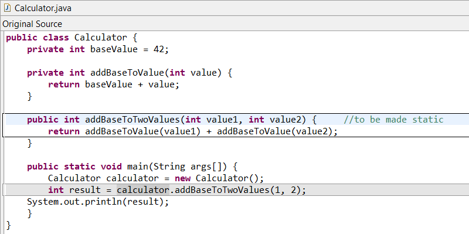
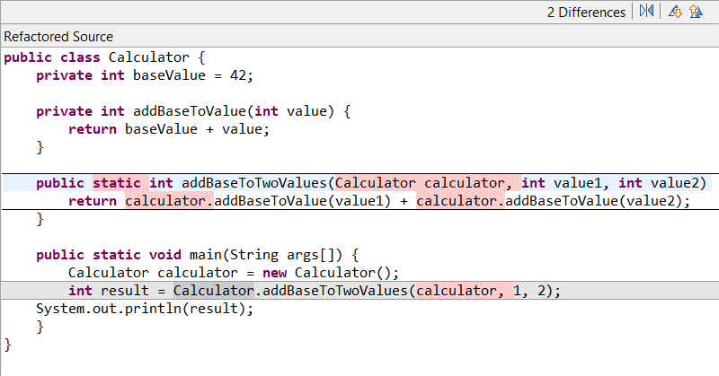
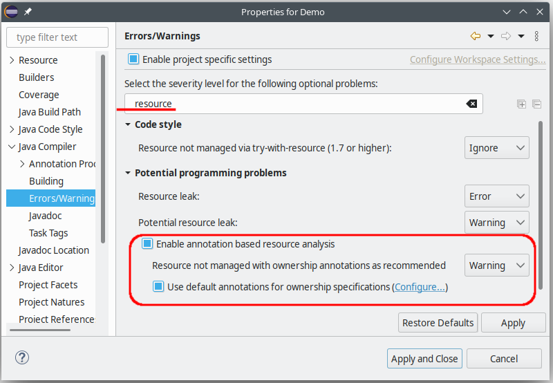
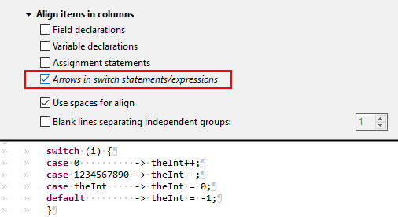

Here are descriptions of some of the more interesting or significant changes made to the Java development tools (JDT) for the 4.31 release of Eclipse. They are grouped into:
See also the Eclipse Platform What's New document for changes in the Platform.
We also recommend to read the Tips and Tricks.
Java Editor |
|
| New Make Static Refactoring |
A new refactoring called 'Make Static' has been added to Eclipse's Java Development Tools (JDT), which converts instance methods into static methods, when possible. This refactoring adds an extra parameter to the method declarations to handle references to instance fields, methods, or classes in the original method. Existing calls to the method are altered accordingly, and if the extra parameter is necessary, the refactoring passes 'this' or the specific instance originally used to access the method. To apply this refactoring, the following conditions must be met:
The refactoring can be executed by selecting a method invocation, except in cases where a super method invocation is selected.   |
Java Compiler |
|
| Analysis of Resource Leaks Improved with Annotations |
The compiler's capability to detect when resources (implementation of AutoCloseable) are not properly closed
has been enhanced.
Previously, flow analysis for resource leaks was focused on resources that are created and closed within the same method. It could not deal well with resources that are shared between different methods, perhaps even different objects.
The compiler now interprets an annotation
Resource allocation is the primordial source, and a call to
It's in method
After method
The body of
Additional rules exist for fields holding a resource and for methods other than
To enable this feature select  |
Java Formatter |
|
| Switch Statements/Expressions: Align Arrows on Column |
Switch statements and expressions with arrows can now be aligned so that all arrows are placed at the same position in line.
Open the formatter profile editor and find the new option under Indentation > Align items in columns > Arrows in switch statements/expressions.
 |